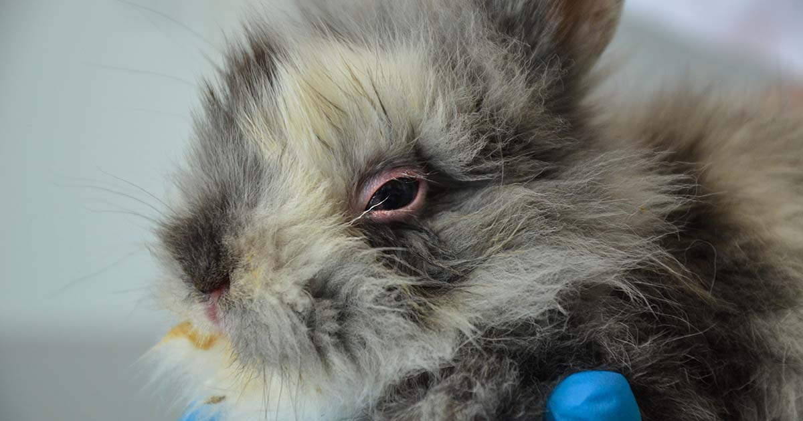

Sickness
There are a variety of diseases your rabbit can potentially get. Make sure to be observant, and when in doubt go see a veterinarian! Not all vets are experienced with rabbits, make sure to find a local vet that has experience with rabbits to give your bun the best care!
How do I know if my Rabbit is sick?
Any unusual or concerning behaviors is a good place to start. If your rabbit is more tired, not eating, or is more reclusive, that could be sign to get them checked. If there is pus or mucus coming out of places that there shouldn’t be normally, get your bunny checked. Catching any disease for a rabbit early can save their life. You don’t have to be paranoid, just be observant and trust your intuition. If the behavior and symptoms your bun is experiencing makes you nervous, go to the vet! You never will regret making sure your bunny is happy and healthy!
Gastrointestinal Stasis (G.I. Stasis)
G.I. Stasis can be caused due to stress, dental disease, or respirator tract infection. The normal bacteria that ferment and digest food in the GI tract can be overtaken by overgrowth of painful, gas and/or toxin-producing bacteria. This can suppresses the rabbit’s appetite with can worsen the problem. The clear signs are your bunny eating less or not at all, not laying on their stomach. If your bunny is more social they can be more reclusive. Please contact your local veterinarian about helping your bunny with GI stasis. If you feel something is wrong CALL. Not addressing it can lead to worsening effects and death.
Snuffles

Snuffles is an upper respiratory track bacterial infection. Pasteurella Multocida is the most common cause of snuffles. Furthermore, symptoms include: eye mucus, redness, squinting, sneezing, mucus or pus-like discharge from the sinuses. Rabbits will often rub their nose when this happens, so check the paws for dry mucus.
Parasites
Rabbits are prone to different intestinal parasites. Check the area you live for parasites that can affect rabbits, especially if you keep your rabbit outdoors.
Dental Disease
In rabbits, tooth or jaw trauma/disease, can change the way their teeth grows. This causes them to not be able to properly file down their teeth when they eat, which can cause pain and discomfort. It can also make it harder for the rabbit to eat. If you see your rabbit grind their teeth in pain, often drop food out of their mouths, stop eating, or lose weight, contact your veterinarian.
Encephalitozoon Cuniculi
If you have ever seen a rabbit with a “permanent head tilt” this is one of the primary causes. It is caused by a microsporidian parasite.
“This condition is caused by an inflammatory infection in the brain and in advanced cases neurological imbalance causes the rabbit to be very unsteady and begin rolling” (VCA Animal Hospital).
E.cuniculi can also cause kidney disease and left untreated can because a fatal infection. Always go to your veterinarian if you feel your rabbit is exhibiting unusual or concerning behaviors, catching disease earlier can save their life!
Uterine Problems
If a female rabbit is not spayed in the proper timeline, a rabbit could have an increased chance of uterine infections or cancer. This is preventable by getting your female rabbit spayed within 5-6 months of age. Female rabbits over 3 years of age are at high risk for developing ovarian, uterine, or mammary cancer. If your bun displays bloody vaginal discharge, that is your sign to go see your vet!